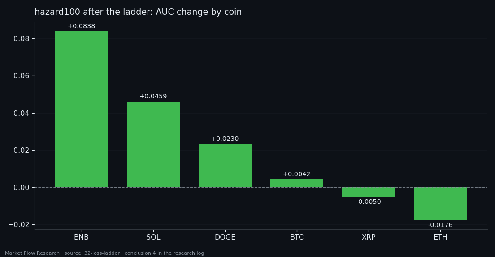
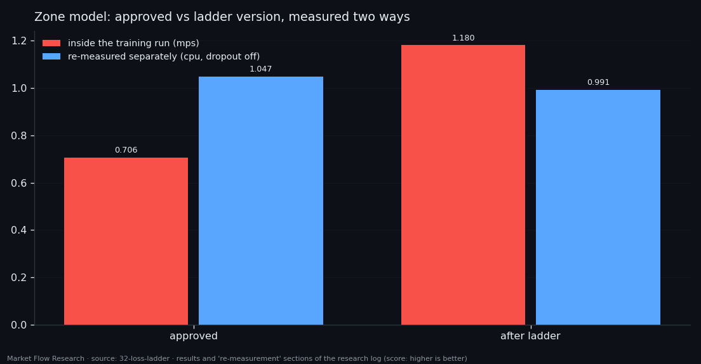

A Loss Ladder for Five Trained Networks — and the Biggest Win That Was a Dropout Bug
We took five approved networks from this series and tried to improve them without retraining: change the loss function between epochs, raise the penalty step by step, keep an epoch only if a fixed metric on validation improves. 124 attempts, 6.9 machine hours. One network truly improved — the one whose own training had stopped too early — and it improved from a smaller learning rate, not a new loss. The spectacular result, +0.47 on the zone model, vanished when the saved weights were measured again in a separate process: the GPU backend had left dropout switched on during evaluation.
① The ladder and its fixed yardstick
This series has several approved networks, each with its best version: weights, settings and the validation number it was chosen by. The question here: can an approved version be fine-tuned by changing the loss function between epochs so that its own fixed metric gets better? And a service question: were they all trained to the end, or did some stop because the epoch budget ran out?
The ladder starts from the approved weights. Each rung is one epoch under its own loss, with the penalty growing rung by rung; after the epoch, the fixed metric is measured on validation. Better — keep the weights and continue from them. Worse — roll back. The metric is chosen in advance and does not depend on the penalty. And every model gets a measurement noise — the spread of repeated measurements of the same point — so a change can be read against it.
Five networks: `legleft` (how many events to the end of the leg), `legtip` (end-of-leg signal), `hazard100` (a pivot within the next 100 events), `hazard4` (four horizons), and `zone` (pivot zone, correction zone, ordinary event). 124 rung attempts in total.

② Fine-tuning helps exactly where training stopped short
The result sorts cleanly by one property — how each network's own training had ended. `hazard100` had been stopped by patience while its metric was still rising (best epoch 8 of 11); the ladder added +0.0224 (0.7204 → 0.7428), with 14 of 29 attempts outside the noise. `legleft` and `legtip` had trained to the end: 0 of 23 and 0 of 25. `hazard4` had also been stopped by patience, but none of its 22 attempts moved the metric even by the noise (±0.0026) — what matters is whether the metric was still moving, not how many epochs were allowed.
The rungs `hazard100` kept were "the same loss, learning rate ×0.3" and "gradient window 40". No new loss shape — focal, proximity-to-pivot weighting, tripled label weight — gave anything a smaller step on the old loss did not. The rule for the rest of the project: before inventing a loss, finish training on a smaller step.
Two more lessons. For `legleft`, all 23 attempts landed at 0.85–0.90 against the approved 0.8373 — the approved number was the best of 32 epochs selected on the same validation, and one new epoch simply returns the model to its typical level. And `hazard100`'s gain is mostly on its weakest coin: BNB from 0.555 to 0.639, while the two strongest coins slipped slightly. "The model improved" really means "the worst part improved".

③ The +0.47 that was not there
The headline number of the run was `zone`: score 0.7055 → 1.1799, and the confusion between the pivot and correction channels cut from 0.417 to 0.263 — five rungs kept, the training curves spotless.
Then all saved weights were measured again, event by event on validation, in a separate process. Four networks reproduced their numbers exactly. `zone` did not: approved 1.0471, ladder 0.9909 — worse by 0.056, with the confusion up from 0.400 to 0.462. The cause: after a backward pass, the `mps` accelerator kept `nn.Dropout` active during evaluation even in `eval` mode. The approved version lost more to that noise than the version trained under the targeted penalty — hence the entire "gain". The ladder version also never says "zone" in argmax mode: its accuracy 0.8936 equals the share of the majority class.
The rule that comes out of it reaches beyond this study: any number measured in the same process as training on `mps` must be re-measured in a separate CPU run. Measuring saved weights costs minutes and catches what no training curve can.
Two further checks close the study. Replacing the zigzag's pivots with fake ones every 150 events barely moved `legleft` (narrow corridor 9.9% → 11.1%); its output does not follow a step counter (correlation 0.036) — it answers from the class, and the labels mostly give it a window of silence. And letting a network reset its own leg — no zigzag at all — reached the same corridor as the labelled version, paying with coverage: a monotone shape can be built into the architecture (`s = (1 − r)·min(s + g, 1)`), but the place of the reversal stays a question of data. On the right reset rate the detector hits 11–17% of reversals, with 88% of its signals false.

Reproduce this study
- Research log (.md, Ukrainian): goal, data, plan, scripts, every confirmed stage and table — enough to rerun the study
- Reproduction kit (.zip): the study's scripts, project rules and base scripts that build every class
If this changed how you read the tape, the natural next step is Volume Is the Fuel — Not the Steering Wheel — We recorded the Binance order book every second for six coins over five months and ran eighteen tests on what volume really does.
Volume Is the Fuel — Not the Steering Wheel
We recorded the Binance order book every second for six coins over five months and ran eighteen tests on what volume really does.
About Market Research Lab — What We Collect and Why
Most market commentary is storytelling.
From Calm to Calm: a Standard for What Counts as a Signal (BTC)
We stopped defining market signals with a stopwatch.
The Wall That Goes Quiet: What Resting Liquidity Predicts
We measured resting limit liquidity sitting on both sides of the book second by second across six coins, and asked the only question that matters:….
Comments
Discussion is powered by GitHub. Enable it by adding secrets/giscus.json (repo IDs from giscus.app).